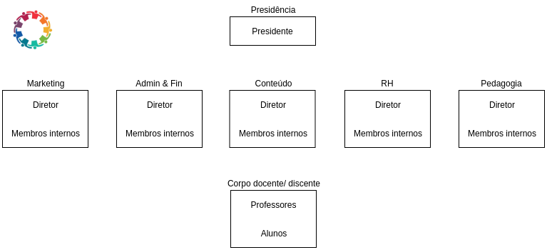

Perfil de Usuários
Perfil de Usuários
O Projeto Cascata em seu contexto possui diferentes cargos, com diferentes atribuições e responsabilidades. O Projeto funciona com setores especializados em cada demanda, e, dentro desta divisão, existem hierarquias. No funcionamento atual do projeto, podemos entender as diferentes hierarquias e setores de acordo com a representação visual abaixo:

Fazendo uma abstração do contexto do projeto, podemos extrair os papeis relevantes dentro do sistema. É importante levar em conta que, considerando que existem diferentes setores e, portanto, diferentes funções para cada setor, todos os membros internos possuem funcionalidades em comum e funcionalidades específicas que variam de acordo com os seus respectivos setores.
| Papel | Descrição | Interação com o sistema |
|---|---|---|
| Administrador | É o responsável pela administração/manutenção dos usuários e administração do conteúdo daquele sistema. O presidente do projeto está contido neste tipo de usuário. Outros usuários serão escolhidos a critério dos membros do projeto para este papel dentro do sistema. | Tem acesso a todas as funcionalidades do sistema. Além disso, realiza a manutenção de usuários do sistema (criação, edição e remoção) e registra frequência de alunos. |
| Diretor | Gerencia os membros e atividades do seu setor, que pode ser Conteúdo, RH, Pedagogia, Marketing ou Administrativo-Financeiro. | Vê e posta notícias, vê os dados pessoais dos membros, vê e registra informações de frequência dos membros, vê a frequência dos alunos e de si mesmo, justifica faltas, recebe alertas de faltas excessivas de si mesmo e de outros membros e alunos. |
| Assessor de Marketing | Responsável pela divulgação do projeto de maneira geral. | Vê e posta notícias, vê os dados pessoais dos membros, recebe alertas de faltas excessivas de si mesmo, vê informações da própria frequência, justifica faltas. |
| Assessor de Pedagogia | Responsável pela manutenção de atividades que envolvem os alunos. | Vê notícias, vê os dados pessoais dos membros, vê informações de frequência dos alunos e de si mesmo, recebe alertas de faltas excessivas de si mesmo e de alunos do projeto, justifica faltas. |
| Assessor de Conteúdo | Responsável pelo conteúdo a ser dado ao longo do semestre ou ano letivo. | Vê notícias, posta materiais, vê os dados pessoais dos membros, recebe alertas de faltas excessivas de si mesmo, vê informações da própria frequência, justifica faltas. |
| Assessor de RH | Responsável pela manutenção de atividades que envolvem os membros do projeto. | Vê notícias, vê dados pessoais dos membros, recebe alertas de faltas excessivas de si mesmo e dos membros do projeto, vê informações de frequência dos membros e da própria frequência, justifica faltas. |
| Assessor Administrativo-Financeiro | Responsável pela manutenção do projeto como um todo e seus gastos. | Vê notícias, vê dados pessoais dos membros, recebe alertas de faltas excessivas de si mesmo, vê informações da própria frequência, justifica faltas. |
| Professor | Responsável por dar aulas aos alunos e fornecer materiais para as aulas. | Vê notícias, vê dados pessoais dos membros, recebe alertas de faltas excessivas de si mesmo, vê informações da própria frequência, justifica faltas, posta materiais. |
| Aluno | Recebe aulas e consomem conteúdos das disciplinas. | Vê notícias, recebe alertas de faltas excessivas de si mesmo, vê informações da própria frequência, justifica faltas, vê materiais. |
Observações
- A visualização das notícias pode ser restringida de acordo com a quem ela compete;
- Membros internos são os assessores de cada setor - o termo "membros internos" existe somente a título de generalização;
- Os usuários administradores não necessariamente possuem um cargo específico no projeto, a escolha de quem será esse usuário fica a critério dos membros do projeto, de forma que um usuário que é administrador pode ter, além de funcionalidades de administrador, funcionalidades de outro cargo, ao mesmo tempo.